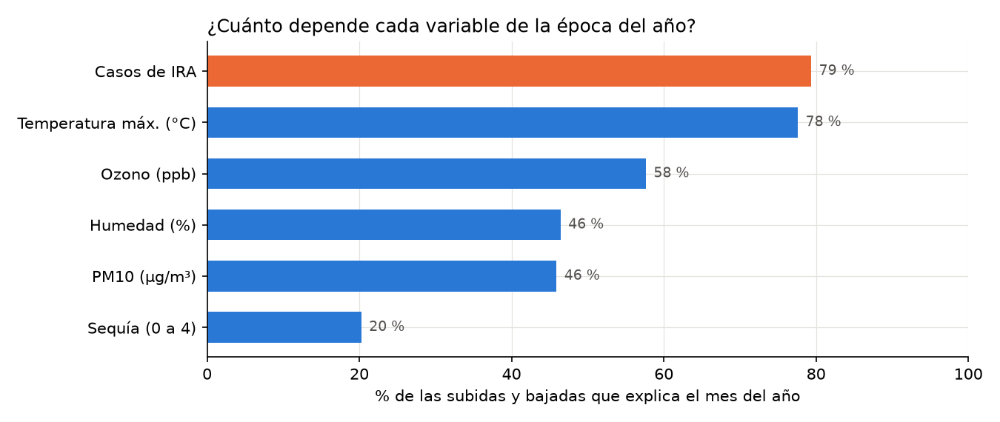
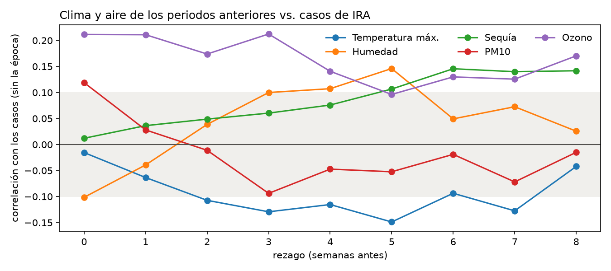

Ingeniería de Características — Proyecto EDA
Condiciones ambientales y salud
respiratoria en Hermosillo, Sonora
Análisis exploratorio espacio-temporal 2015–2020
Ana Patricia Quiroz · Luis Hiram Hernandez Gutierrez · Victor Andree De La Torre Velazquez
¿Cómo inciden el calor, el frío, la sequía y la calidad del aire en la
incidencia de enfermedades respiratorias?
¿Las zonas más marginadas son las más afectadas por esas condiciones?
Hallazgo principal
El calendario manda
Los casos casi se triplican de julio a enero (~1,900 → ~6,200/semana),
todos los años.
Saber el mes explica el 79 % de las subidas y bajadas
de casos.
| Correlación cruda | Sin la época |
|---|
| Temperatura | −0.78 | −0.02 |
| PM10 | +0.49 | +0.12 (n.s.) |
| Sequía | −17 % casos | +0.1 % |
Las "relaciones" con clima y aire eran coincidencias de calendario.

% de la variación semanal explicada solo por el mes del año (2015–2019).
"Cuando baja la temperatura suben los casos, y viceversa. ¿Relación real con la
temperatura o efecto estacional? — Resultó ser casi todo estacionalidad;
lo único que queda es una señal pequeña del frío anómalo, no del calor."
Más allá de la estacionalidad
Lo que sí queda: una señal pequeña de frío
- Frío anómalo rezagado: semanas más frías de lo normal → ~2–3 % más casos
en las 3–5 semanas siguientes (−0.15, p ≈ 0.05). Fuerte en 2018–2019,
casi nula en 2015–2017.
- Ozono: +0.21 con más casos, pero frágil — baja a +0.12 sin 2016, año con
lecturas dudosas del sensor.
- Outliers (4 técnicas): IF y LOF coinciden en 7 semanas raras; casi todas
eventos reales (PM10 nov-2017, primavera seca 2018, 2020 COVID). Marcadas, no borradas.
- PCA/t-SNE: las semanas se agrupan por temporada; sin la época, los
grupos desaparecen y ningún "tipo de semana" tiene más casos (−0.12).

Correlación sin la época entre cada exposición y los casos, por
semanas de rezago: solo el frío anómalo asoma una señal pequeña a las 3–5 semanas.
Ninguna señal apunta al calor extremo: la hipótesis original no se confirma con estos datos.
Pregunta de vulnerabilidad
Marginación por colonia: la red de salud no llega a todos
- 76 unidades CLUES dentro de colonia → 58 de las 657 colonias concentran
toda la observación de IRA.
- Sin gradiente marginación–carga: ρ = 0.14; todos los grupos reaccionan
por igual al frío anómalo.
- El hueco clave: las 12 colonias más marginadas no tienen ninguna
unidad que reporte.

Marginación por colonia (CONAPO 2020) y unidades CLUES (puntos
negros): ninguna unidad cae en las colonias de grado Alto/Muy alto.
Donde más hace falta observar no hay observatorio — una brecha de
acceso a la salud; y los casos son por ubicación de clínica, no por residencia del paciente.